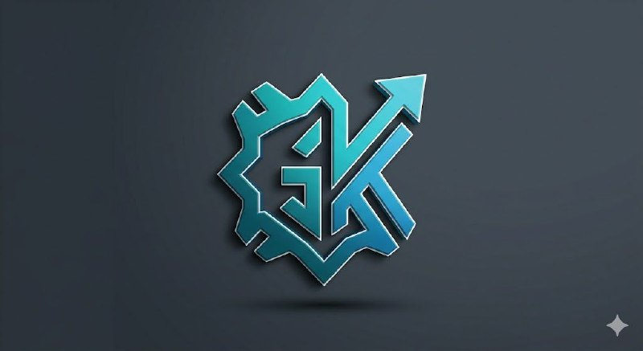

Leonhardt (Леонхард)
Базовый танк с хорошим оглушением.

King God CastleОфициальный сайт в стиле King God Castle: свежие обновления, герои и игровые возможности. Открывается в Google Chrome, Firefox, Edge и других современных браузерах.
Откройте этот файл в Google Chrome, Microsoft Edge, Firefox или любом другом современном браузере.
King God Castle — мобильная RPG с богатым набором героев, множеством игровых режимов и системой прокачки персонажей. Игроки собирают команду, развивают героев, улучшают руну и проходят сюжетные миссии и испытания.
В игре есть PvE-режимы, такие как кампания, Великая трещина и гильдейские рейды, а также PvP-арена для сражений с другими игроками. Герои открываются по мере прогресса, а их силу повышают с помощью звёзд, экипировки и навыков.
Каждый герой имеет 6 базовых характеристик: Health Point (HP), Attack (ATK), Spell Power (SP), Speed (SPD), Range и Movement Speed. Улучшение уровня повышает HP, ATK и SP, а также открывает новые способности.
Герои — это управляемые персонажи в King God Castle. Они имеют разные роли, стили боя и способности, которые помогают побеждать в сюжете, рейдах и PvP.
Основные категории героев: Танки, Ближний бой, Дальний бой, Маги и заклинатели, Поддержка и лечение.
Базовый танк с хорошим оглушением.
Сильный танк, генерирует прочные щиты от магической силы.
Призывает каменного голема, который принимает урон на себя.
Защищает команду от контроля и блокирует вражеские заклинания.
Поглощает урон, который наносят союзникам рядом с ней.
Обрушивает на врагов мощные удары с контролем площади.
Стартовый герой, один из лучших для зачистки толп за счет волн энергии.
Наносит огромный урон одиночным целям, переводя ману в святые мечи.
Накупает заряды и наносит мощные удары по площади, идеальна против боссов.
Мобильный боец, восстанавливающий здоровье от своих водных атак.
Молниеносно перемещается по полю боя, нанося режущие удары.
Эффективный боец, наносящий урон по площади вокруг себя.
Специализируется на высокой скорости атаки по одиночным целям.
Бьет по земле, подбрасывая и оглушая противников.
Превращается в волка, накладывая на цель метку для повышенного урона.
Чрезвычайно мобильный персонаж, атакующий кинжалами.
Эффективный гибридный боец ближнего боя.
Ловкий персонаж с высоким шансом уклонения.
Бросается в бой на коне, сминая ряды противника.
Снайпер с огромной дальностью атаки и высоким уроном.
Пулеметчик мира KGC, разгоняет скорость атаки до максимума.
Бьет цепными молниями, зачищая дальние ряды.
Вызывает разрушительные метеоритные дожди.
Атакует с помощью звуковых волн, стягивая врагов.
Атакует на дистанции, снижая скорость атаки врага.
Замораживает большие группы врагов заклинаниями льда.
Выпускает сферы, которые одновременно лечат союзников и ранят врагов.
Накладывает проклятия, наносящие периодический урон.
Призывает своих теневых клонов, заполняющих поле боя.
Связывает врагов нитями, распределяя урон и контроль между ними.
Атакует теневыми стрелами с магическим эффектом.
Классический лекарь, восстанавливающий здоровье по площади.
Заливает ману союзникам, ускоряя использование их навыков.
Связывает себя с главным керри, передавая ему часть своих характеристик.
Усиливает вампиризм и силу атаки привязанного союзника.
Снимает негативные эффекты и лечит команду.
Защитный саппорт-танк, который поглощает урон за союзников.
Отображается в игре оранжевыми цифрами. Это основной тип урона для большинства персонажей.
Physical Normal DMG: наносится базовыми автоатаками героев (например, выстрелы Арамиса или удары Ханси). Он напрямую зависит от характеристики Сила атаки (ATK).
Physical Skill DMG: наносится способностями героев, но масштабируется от их физической силы атаки (ATK), а не от магии. Пример — волны Эвана или ультимейт Цзо Бая.
Как усиливать: экипировать Мечи (дает прямую прибавку к ATK), использовать Луки (увеличивают скорость автоатак) и прокачивать Алтарь Меча.
Чем блокируется: снижается физической броней (Defense/Armor) противника.
Отображается в игре синими цифрами. В основном это урон от заклинаний и ультимативных способностей.
Spell Skill DMG: стандартный тип урона для магов (Прия, Зупитере, Хела). Его сила напрямую зависит от параметра Сила заклинаний (Spell Power / SP).
Spell Normal DMG: редкий тип урона, когда даже базовые автоатаки героя наносят магические повреждения (например, призванные куклы Риэ или атаки Канака под механиками Наследия).
Как усиливать: экипировать Посохи (увеличивают SP) и качать Алтарь Мага (дает силу заклинаний и ману на старте).
Чем блокируется: снижается магическим сопротивлением (Magic Resistance) врагов.
Отображается белыми цифрами. Это аналог чистого или дополнительного урона в King God Castle.
Механика: Особый урон срабатывает только при выполнении конкретных условий. Например, при сборке определенных сетов аксессуаров (комплекты Варвара или Ветра), эффектов от Уникального Наследия (Legacy) или некоторых пассивных навыков.
Особенность: этот урон полностью игнорирует физическую броню и магическое сопротивление цели. Однако его все еще можно заблокировать с помощью механики Могучего блока (Mighty Block).
Пример: свойство оружия «20% особого урона двум соседним целям при автоатаке».
Тип урона, при котором одно и то же умение персонажа рассчитывается сразу по двум формулам.
Механика: способность наносит урон, который одновременно складывается из определенного % от Силы атаки (ATK) и % от Силы заклинаний (SP).
Яркие представители: Розовинда, Мел и танк Тэсан. Таким героям отлично подходят гибридные сборки (например, Меч + Посох).
Защита (Def) и Сопротивление: снижают входящий физический и магический урон в процентном соотношении.
Щиты (Protection / Абсорб): белая полоска поверх здоровья, как у Шелды. Поглощает любой тип урона, пока не иссякнет.
Могучий Блок (Mighty Block): специальные щитки, каждая из которых полностью аннулирует одну атаку или заклинание противника, включая Особый урон. Персонажи вроде Кинжала или реликвии взрыва могут их снимать.
Реликвии дают уникальные бонусы команде и расширяют тактические возможности.
Дварвенский прицел (Dwarven Scope): увеличивает дальность стрельбы/заклинаний всех дальних бойцов на +1 или +2 клетки. При атаке с предельного расстояния урон критически умножается.
Пожиратель страха (Fear Devourer): за каждого убитого противника временно увеличивает Силу атаки и Заклинаний всей команды до конца раунда.
Молот кузнеца (Blacksmith's Hammer): дает шанс временно оглушить цель при критическом ударе обычной автоатакой.
Специальная группа реликвий, которая не даёт боевых эффектов, но добавляет +5 очков к конкретному Алтарю:
Пример: реликвия Алтаря Мага позволяет преодолеть стандартный лимит очков и собрать комбинацию вроде 15 Мага + 15 Крови, что невозможно сделать базовыми очками аккаунта.
Эти реликвии существуют исключительно внутри режима «Великий Рифт». Их нельзя экипировать в главном меню замка, они покупаются у торговцев прямо во время забега.
Слеза Богини: даёт герою огромный бонус к Силе заклинаний за каждый предмет более низкого ранга в инвентаре.
Сердце Дракона: переводит избыточное лечение в прочные щиты.
Кольцо Отражения: возвращает часть полученного урона атакующему врагу в виде чистого урона.
Для уверенного прохождения глав Штурмов с римскими цифрами лучшая стратегия — «Hero Lock» (Блокировка Героев).
Суть: берёте одного мощного керри и пять фиксированных саппортов — Лика, Луниар, Альберон, Бардей и Асиак. В первом раунде всегда выпадает только ваш керри, поэтому вкладываете ресурсы именно в него.
Много врагов, сильные удары, но нет сложных щитов. Нужен керри с массовым уроном.
Появляются вампиры, эльфы и орки с высоким уклонением, лечением и ядом. Обычного урона может не хватать.
Самые сложные главы первого акта. Призраки иммунны к физическому урону, а Врата Бездны спавнят щиты.
В Новом мире старая тактика одного керри работает хуже из-за отражения урона и постоянного призыва мобов.
Каждый персонаж обладает собственным набором умений и стилистикой игры.
Захватывающие бои, динамичные события и быстрый прогресс.
Новые задания, герои и события выходят регулярно.